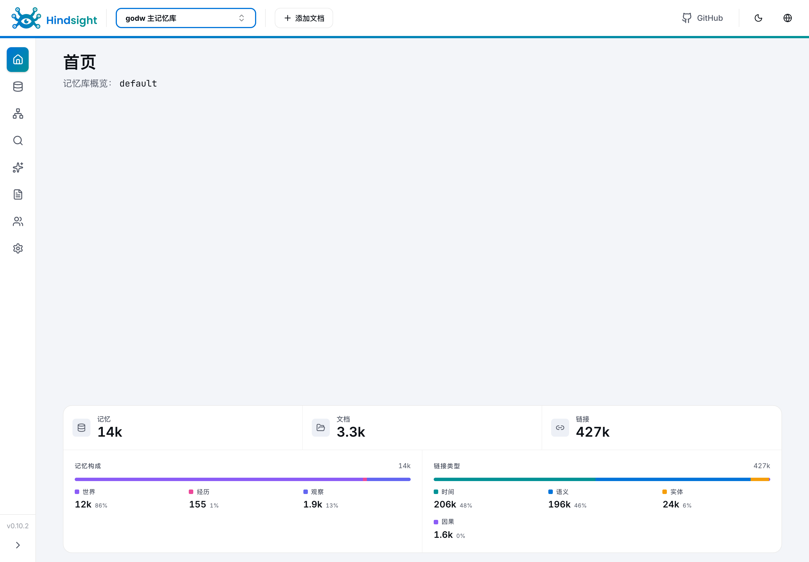
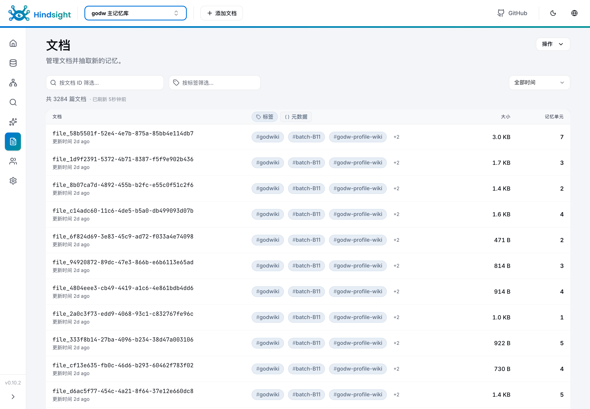

一、问题的提出
「这事上次怎么解决的?」检索不到
文档在 wiki、结论在聊天记录、细节在人脑。检索以文档为单位,要求先知道答案在哪份文档里——新人恰恰没有这个前提。同一个问题,换个小组重做一遍。
AI 助手:会话即遗忘
全组 50 人每天都在用,但每个助手无状态、彼此隔离。团队知识进不了 AI 的工作过程,50 人的日常使用,没有沉淀为任何积累。
二、核心洞察
消费端在迁移:读者从人变成 AI 助手
知识库的主要读者不再是翻文档的人,而是回答问题的 AI 助手。
存储单元从「文档」降到「事实」
文档级检索回答「哪份文档讲过」;事实级直接回答「这件事是什么」——只有事实能进入 AI 的回答。
记忆是生命周期,不是一次性导入
写入、整理、召回三个环节缺一不可;只有导入、没有整理,检索质量随规模退化。
三、方案:会学习的团队记忆
Hindsight 是 Vectorize 的开源 agent 记忆系统,定位是「让 agent 学习,而不只是记住」:不存对话原文,只从中抽取类型化的事实,在事实上持续构建。官方基准 LongMemEval 94.6%(次优系统 74.0%),由弗吉尼亚理工 Sanghani 中心与《华盛顿邮报》独立复现。
- 接入内置 MCP 端点,任意 AI 助手一行配置;网页、接口可直查。
- 加工大模型把文档与对话抽取为事实并生成向量,无人工整理。
- 存储PostgreSQL + pgvector,事实与向量同库。
- 整理定期合并去重、归纳同主题,检索质量不随规模退化。
三种用法:
存量导入
批量灌入,自动拆成一条条事实,7112 篇已入 3267 篇。
自动沉淀与召回
协作中的结论自动记下;任何人问到,助手自动带出。
直接检索
网页、接口直接查,不当 AI 用也是一个知识库。
两个架构图,点开可交互:
四、效果
一次检索,问法随意,不需要知道文档名。
需求澄清,怎么判断理解到位了?
需求质量维度完整性、清晰性、可测量性等七个维度,逐条检查需求是否写得足够好
验收标准判断一项工作是否达到验收边界的标准,必须可测量、能逐项核验
澄清流程问题必须可快速回答,答案要能改变实现或验收方式,低影响问题不问
来源标签 godwiki · 共命中 20 条相关记忆 · 秒级返回
- 规模3267 / 7112 篇已拆解入库,无人工参与。
- 质量一次提问返回 20 条相关事实,语义检索加重排两级。
- 稳定自 10 月 24 日连续运行。
控制台实况:


五、实施路径
-
内网一台服务器,容器化部署
两个容器,一台机器。
-
存量文档批量导入
不依赖人工整理。
-
每人 AI 助手一行配置接入
当天接入当天能用。
- 每一步可单独回退。